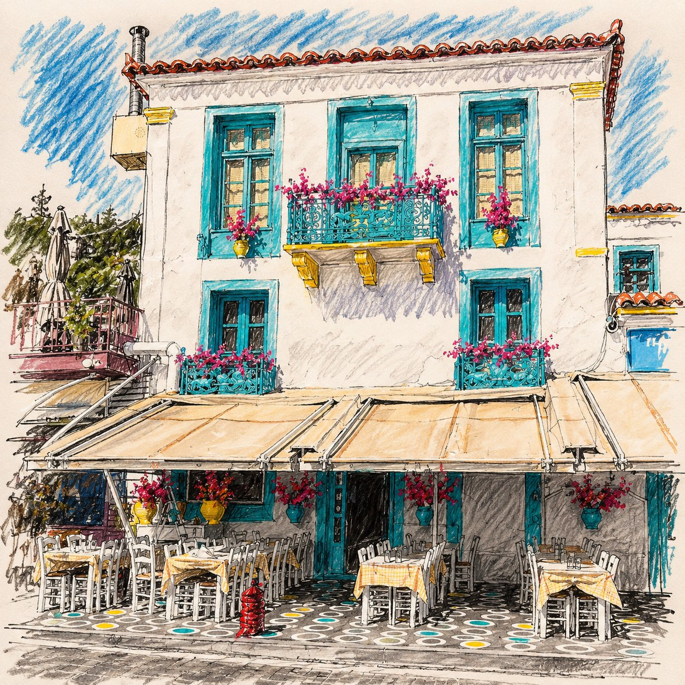
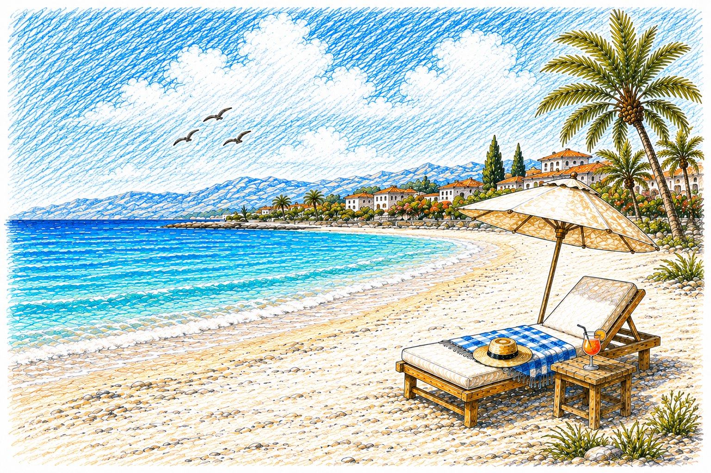

Most holiday stress isn't about what to do. It's about doing it too late.
The passport that expires next month. The ferry that sold out. The bank card that gets blocked on your first night in a seaside taverna. This planner fixes that by working backwards from take-off, so every job lands at the right moment and nothing piles up in the final week.
Pick the stage you're at, do what's on the list, and come back when the next one comes round. Bookmark it, print it, or share it with whoever's coming along.
start here: five things to do today
THE COUNTDOWN AT A GLANCE
Find where you are on the line, then jump straight to that stage:
3 MONTHS OUT: DREAM IT
The fun bit. Before you open a single booking site, get clear on the trip you actually want.
Ask yourself:
- Why this trip? Rest, adventure, food, history, family time? Your answer shapes everything else.
- Islands or mainland, or both? One base with day trips is relaxing; hopping between places packs in more but costs more time in transit.
- Who's coming? Toddlers, teenagers and grandparents all travel differently.
- How much can you spend? Set the total first, then split it across flights, stays, food, activities and a little for shopping.
Then tick these off:
8 WEEKS OUT: BOOK THE BIG STUFF
The best rooms, fares and ferry seats go first, especially in July and August. Lock them in now.

4 WEEKS OUT: SORT THE ADMIN
Nothing glamorous here, but this is where most avoidable travel problems get caught.
1 WEEK OUT: PACK LIKE A LOCAL
Lay everything out on the bed first, then put a third of it back. You'll buy sandals and a sunhat there anyway.
What you'll wear
What goes in your wallet
What goes in your tech pouch
What goes in your wash bag

48 HOURS OUT: THE FINAL SWEEP
Ten minutes now saves an hour of panic later.
DEPARTURE DAY: OUT THE DOOR
You've done the hard work. Today is just about leaving calmly.
Before you lock up
On the way
YOUR GREEK STARTER KIT: 30 WORDS THAT OPEN DOORS
You don't need to be fluent. A cheerful kaliméra in the morning and an efharistó at the till will earn you warm smiles wherever you go.
The accent mark shows which syllable to stress.
Everyday essentials
| English | Say it | Greek |
|---|---|---|
| Hello | Yia sas | Γεια σας |
| Good morning | Kaliméra | Καλημέρα |
| Good evening | Kalispéra | Καλησπέρα |
| Good night | Kalínihta | Καληνύχτα |
| Please / You're welcome | Parakaló | Παρακαλώ |
| Thank you | Efharistó | Ευχαριστώ |
| Yes | Ne | Ναι |
| No | Óhi | Όχι |
| Sorry / Excuse me | Signómi | Συγγνώμη |
| Where is…? | Poú íne…? | Πού είναι…; |
| How much is it? | Póso káni? | Πόσο κάνει; |
| The bill, please | To logariasmó, parakaló | Τον λογαριασμό, παρακαλώ |
| Coffee | Kafés | Καφές |
| Water | Neró | Νερό |
| Wine | Krasí | Κρασί |
| Beer | Bíra | Μπίρα |
| Cheers! | Yia mas! | Γεια μας! |
| Beach | Paralía | Παραλία |
| Toilet | Toualéta | Τουαλέτα |
| Help! | Voíthia! | Βοήθεια! |
Numbers 1–10
| Say it | Greek | |
|---|---|---|
| 1 | Éna | ένα |
| 2 | Dío | δύο |
| 3 | Tría | τρία |
| 4 | Téssera | τέσσερα |
| 5 | Pénde | πέντε |
| 6 | Éxi | έξι |
| 7 | Eftá | εφτά |
| 8 | Ohtó | οχτώ |
| 9 | Enniá | εννιά |
| 10 | Déka | δέκα |
QUICK ANSWERS
I've only got a few weeks. Is it too late?
Not at all. Start with the "Start here" list at the top, then work through each stage in order, doubling up where you need to.
Do I really need cash in Greece?
Cards are widely accepted, but it's wise to carry some euros for kiosks, small family tavernas, village shops and tips.
What should I wear to visit churches and monasteries?
Cover your shoulders and knees. A light scarf in your day bag solves it in seconds.
Should I book ferries in advance?
In high summer, yes, especially on popular routes and if you're taking a car. Out of season you have more flexibility. Our island hopping guide has the details.
KALÓ TAXÍDI!
(Have a good trip!)
We hope this planner helps you prepare for an amazing trip to Greece. Looking for ideas on where to go? Browse our travel blogs and travel tips.